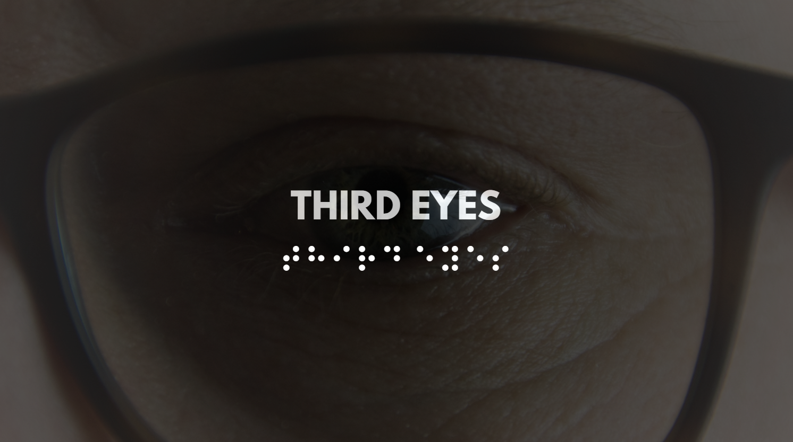

CompetitionThird Eyes
Business Analyst
AI-powered smart glasses for visually impaired people. When a white cane touches an object, the glasses detect and announce it by voice in real time. Pitched as a B2B solution to organizations supporting blind users.
Key Learnings
- Design for how users actually behave, not just what tech can do
- B2B fits assistive tech better than selling direct to users
- Smart triggering beats always-on detection for performance and battery life
Python
Computer Vision
Text-to-Speech